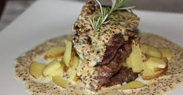

Filé ao molho Dijon
Autor: Artur Campos

Tempo de Preparação: 40 minutos
Rendimento: 6 porções
Informação Nutricional:
400 kcal,
30 g
Ingredientes:
-
1 kg de filé mignon cortado em medalhões
-
1 colher (sobremesa) de alho moído
-
3 colheres (sopa) de mostarda de dijon
-
Sal e pimenta à gosto
-
1 cubo de caldo de legumes
-
1 pote de reme de leite fresco
-
1 colher (sobremesa) de manteiga
-
1 colher (sobremesa) de azeite
Modo de Preparo:
Grelhar os filés na manteiga e adicionar uma mistura de sal e pimenta
Depois de grelhados, reserve
Fritar o alho na manteiga com azeite, acrescente a mostarda,o creme de leite, o caldo de legumes e acerte o sal se necessário
Despeje sobre os filés, sirva em seguida
66 pessoas avaliaram essa receita
...